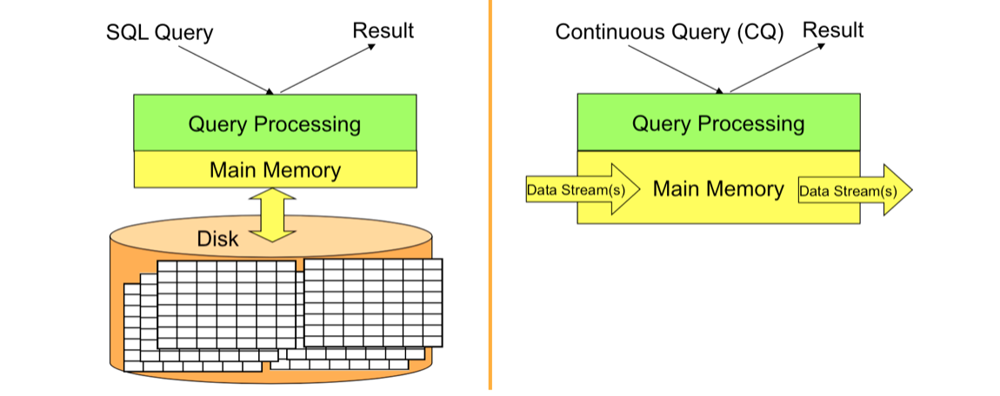
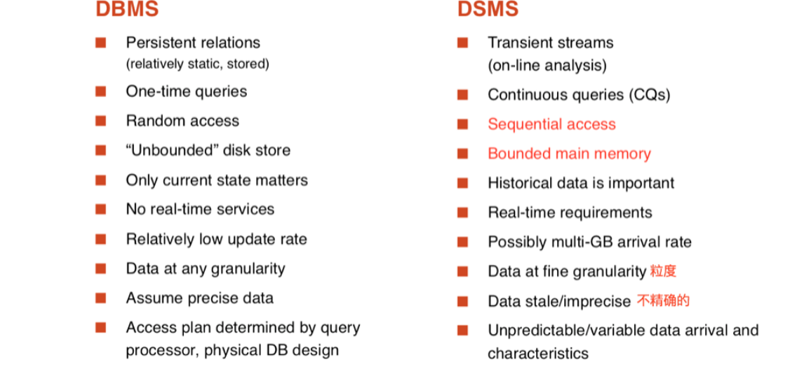
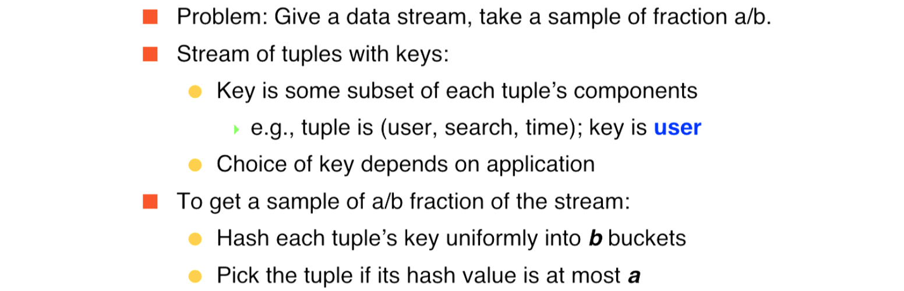
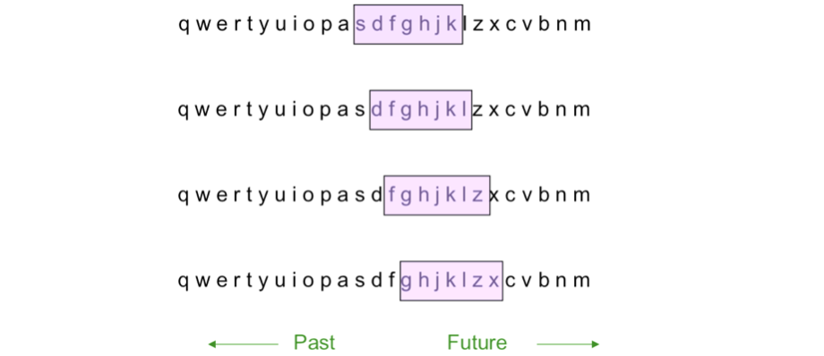

Abstract:
- Data Streams
- Querying Data Streams
Data Streams
- In many data mining situations, we do not know the entire data set in advance
- Stream Management is important when the input rate is controlled externally:
- Google queries
- Twitter or Facebook status updates
- We can think of the data as infinite and non-stationary(the distribution changes over time)
Characteristics
- Huge volumes of continuous data, possibly infinite
- Fast changing and requires fast, real-time response
- Random access is expensive—single scan algorithm (can only have one look)
- Store only the summary of the data seen thus far
Stream Model
- Input elements enter at a rapid rate, at one or more input ports(i.e., streams)
- The system cannot store the entire stream accessibly
DBMS VS. DSMS
DBMS: Database Management System Data Processing
DSMS: General Data Stream Management System Processing model

- DBMS:
- stored sets of relatively static records with no pre-defined notion of time
- good for applications that require persistent data storage and complex querying
- DSMS:
- support on-line analysis of rapidly changing data streams
- data stream: real-time, continuous, ordered(implicitly by arrival time or explicitly by timestamp) sequence of items, too large to store entirely, no ending
- continuous queries

Problems on Data Streams
- Types of queries one wants on answer on a data stream
- Sampling data from a stream: construct a random sample which can reflect the original database
- Queries over sliding windows: number of items of type x in the last k elements of the stream
- Filtering a data stream: Select elements with property x from the stream
- Counting distinct elements: Number of distinct elements in the last k elements of the stream
We are going to talk about this topics.Applicaitons
- Mining query streams
- Google wants to know what queries are more frequent today than
yesterday
- Google wants to know what queries are more frequent today than
- Mining click streams
- Yahoo wants to know which of its pages are getting an unusual number of hits in the past hour
- Mining social network news feeds
- E.g., look for trending topics on Twitter, Facebook
- Sensor Networks
- Many sensors feeding into a central controller
- Telephone call records
- Data feeds into customer bills as well as settlements between telephone companies
- IP packets monitored at a switch
- Gather information for optimal routing
Sampling Data Streams
Since we can not store the entire stream, one obvious approach is to store a sample
Two different problems:
- Sample a fixed proportion(固定比例) of elements in the steam
- As the stream grows, the sample also gets bigger
- Maintain a random sample of fixed size(固定大小) over a potentially infinite stream
- As the stream grows, the sample is of fixed size
- Sample a fixed proportion(固定比例) of elements in the steam
Sampling a Fixed Proportion
- Question: How often did a user run the same query in a single days?
- Stream of tuples: (user, query, time)
- If you have space to store 1/10th of query stream
- Naïve solution:
- Generate a random integer in [0..9] for each query
- Store the query if the integer is 0, otherwise discard
- Problem with Naïve solution:
- What fraction of queries by an average search engine user are duplicates?
Example:
- What fraction of queries by an average search engine user are duplicates?
- Suppose each user issues x queries once and d queries twice (total of x+2d queries)
- Correct answer: d/(x+d)
Proposed solution: We keep 10% of the queries
- Sample will contain x/10 of the singleton queries and 2d/10 of the duplicate queries at least once
- But only d/100 pairs of duplicates
- d/100 = 1/10 1/10 d
- Of d “duplicates” 18d/100 appear exactly once
- 18d/100 = ((1/10 9/10)+(9/10 1/10)) * d
- So the sample-based answer is d/100 / (x/10 + d/100 + 18d/100 ) ≠ d/(x+d)
Solution: Sample Users
- Pick 1/10th of users and take all their searches in the sample
- Use a hash function that hashes the user name or user id uniformly into 10 buckets
- We hash each user name to one of ten buckets, 0 through 9
- If the user hashes to bucket 0, then accept this search query for the sample, and if not, then not.
- 总结：a Fixed Proportion Generalized Problem and Solution

A Fixed-size Sample
- Suppose we need to maintain a random sample S of size exactly s tuples
- Suppose at time n we have seen n items, Each item is in the sample S with equal prob. s/n
- Algorithm (a.k.a. Reservoir Sampling)
- Store all the first s elements of the stream to S
- Suppose we have seen n-1 elements, and now the nth element arrives(n > s)
- With probability s/n, keep the nth element, else discard it
- If we picked the nth element, then it replaces one of the s elements in the sample S, picked uniformly at random
After n elements, the sample contains each element seen so far with probability s/n
How to prove it? —— Induction
- Assume that after n elements, the sample contains each element seen so far with probability s/n
- We need to show that after seeing element n+1 the sample
maintains the property- Sample contains each element seen so far with probability s/(n+1)
- Base case:
- After we see n=s elements the sample S has the desired property
- Each out of n=s elements is in the sample with probability s/s =1
- After we see n=s elements the sample S has the desired property
- Inductive step: For elements already in S, probability that the algorithm keeps it in S is:
- So, at time n, tuples in S were there with prob. s/n
- Time n -> n+1, tuple stayed in S with prob. n/(n+1)
- So prob. tuple is in S at time n+1 = s/n * n/n+1 = s/n+1
Querying Data Streams
Sliding Windows
- A useful model of stream processing is that queries are about a window of length N —— the N most recent elements received
- Interesting case: N is so large that the data cannot be stored in memory, or even on disk
Example: Sliding window on a single stream (N = 7)